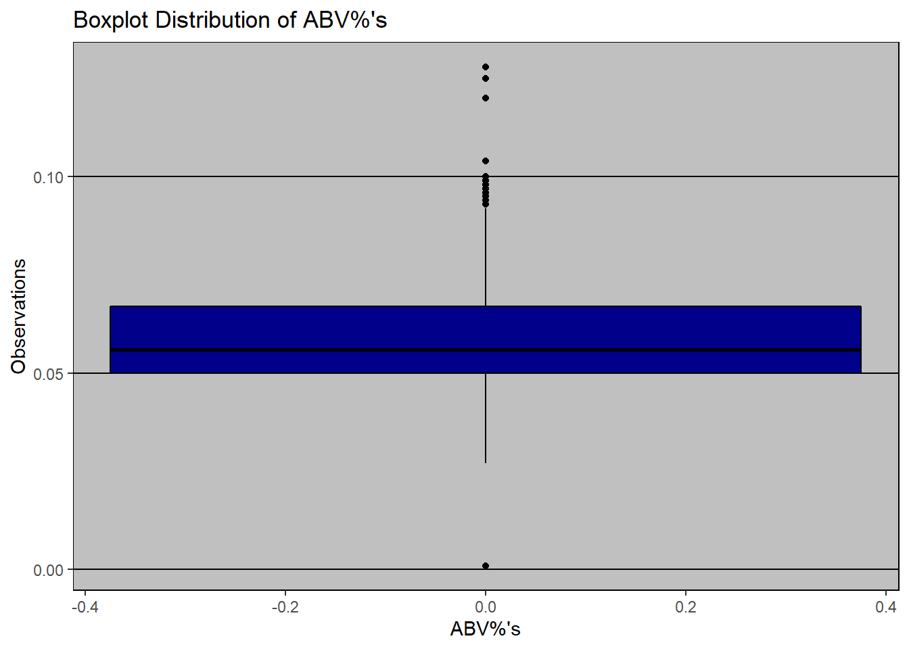

Craft Beer Presentation To Budweiser CEO & CFO
Good Afternoon, Mr. CEO and Mr. CFO,
As consultants for Budweiser we have completed our analysis of the data on craft beer and craft breweries that you provided us. We have answers to the 7 questions that you have hired us to find and have found some additional insights that we feel will prove to increase revenue and profitability for your company.
**Craft breweries are a major disruptor in the American beer market. The data you provided us contains information about 2,410 craft beers and 510 US craft breweries. Here are the answers to your questions about the American craft beer market:**
You first asked us how many craft breweries are present in each state.
brews %>% group_by(State) %>% filter(n() > 5) %>% ggplot(aes(forcats::fct_infreq(State))) + geom_bar(stat="count", fill="darkblue") + ggtitle("Brewery Count By States With At Least 5 Breweries") + xlab("State") + ylab("Number of Breweries") + theme_excel()
This chart shows craft brewery count by state in descending order. Colorado has the most craft breweries, with California, Michigan, Oregon, and Texas rounding out the top 5.
You provided us two different data sets, one containing craft beer data and one containing craft brewery data. In order to answer the rest of the questions that you have asked, we needed to merge the two data sets together.
beersbrews <- merge(beers,brews, by.x = "Brewery_id", by.y = "Brew_ID")
colnames(beersbrews)[colnames(beersbrews)=="Name.x"] <- "BeerName"
colnames(beersbrews)[colnames(beersbrews)=="Name.y"] <- "BreweryName"The two data sets are now merged together using a unique Brewery_ID identifier.
When looking at the merged data set we noticed that there were many missing ABV% values and IBU values. There were 1005 observations that had missing IBU values with 62 of those missing ABV% values as well. This accounted for 41.7% of the data set that you provided us. This is such a large amount of the data set that we cannot simply remove it from our analysis. Therefore we have imputed the values using average ABV% and IBU for the corresponding beer style of the beer that is missing those value(s).
# count missing values in each column
#sapply(beersbrews, function(x) sum(is.na(x)))
# Missing values
#summary(beersbrews$ABV)
#summary(beersbrews$IBU)
# Plots using mice and VIM packages showing missing values
md.pattern(beersbrews)## Brewery_id BeerName Beer_ID Style Ounces BreweryName City State ABV
## 1405 1 1 1 1 1 1 1 1 1
## 943 1 1 1 1 1 1 1 1 1
## 62 1 1 1 1 1 1 1 1 0
## 0 0 0 0 0 0 0 0 62
## IBU
## 1405 1 0
## 943 0 1
## 62 0 2
## 1005 1067aggr_plot <- aggr(beersbrews, col=c('navyblue','red'), numbers=TRUE, sortVars=TRUE, labels=names(beersbrews), cex.axis=.7, gap=3, ylab=c("Histogram of missing data for Beer-Breweries","Pattern"))##
## Variables sorted by number of missings:
## Variable Count
## IBU 0.41701245
## ABV 0.02572614
## Brewery_id 0.00000000
## BeerName 0.00000000
## Beer_ID 0.00000000
## Style 0.00000000
## Ounces 0.00000000
## BreweryName 0.00000000
## City 0.00000000
## State 0.00000000# Datatype conversion of factors to string for using regex & ready for mice
beersbreweriesimputedmice <- beersbrews
#str(beersbreweriesimputedmice)
beersbreweriesimputedmice$BeerName <- as.character(beersbreweriesimputedmice$BeerName)
beersbreweriesimputedmice$BreweryName <- as.character(beersbreweriesimputedmice$BreweryName)
beersbreweriesimputedmice$Style <- as.character(beersbreweriesimputedmice$Style)
beersbreweriesimputedmice$City <- as.character(beersbreweriesimputedmice$City)
beersbreweriesimputedmice$State <- as.character(beersbreweriesimputedmice$State)
#str(beersbreweriesimputedmice)
#The mice() function takes care of the imputing process using 'pmm' method
tempData <- mice(beersbreweriesimputedmice,m=5,maxit=5,meth='pmm',seed=1)##
## iter imp variable
## 1 1 ABV IBU
## 1 2 ABV IBU
## 1 3 ABV IBU
## 1 4 ABV IBU
## 1 5 ABV IBU
## 2 1 ABV IBU
## 2 2 ABV IBU
## 2 3 ABV IBU
## 2 4 ABV IBU
## 2 5 ABV IBU
## 3 1 ABV IBU
## 3 2 ABV IBU
## 3 3 ABV IBU
## 3 4 ABV IBU
## 3 5 ABV IBU
## 4 1 ABV IBU
## 4 2 ABV IBU
## 4 3 ABV IBU
## 4 4 ABV IBU
## 4 5 ABV IBU
## 5 1 ABV IBU
## 5 2 ABV IBU
## 5 3 ABV IBU
## 5 4 ABV IBU
## 5 5 ABV IBU## Warning: Number of logged events: 5#summary(tempData)
#tempData$imp$ABV
#tempData$imp$IBU
#tempData$meth
#Inspecting the distribution of original data in comparison with imputed data
densityplot(tempData)#stripplot(tempData, pch = 20, cex = 1.2)
completedData <- complete(tempData,1)
#Inspecting the imputed data
beersbrewsimputed <- completedData
summary(beersbrewsimputed$ABV)## Min. 1st Qu. Median Mean 3rd Qu. Max.
## 0.00100 0.05000 0.05600 0.05976 0.06700 0.12800summary(beersbrewsimputed$IBU)## Min. 1st Qu. Median Mean 3rd Qu. Max.
## 4.00 21.00 35.00 42.38 64.00 138.00#write_csv(beersbreweriesimputed, "beersbreweriesimputed.csv")These missing values now contain the average value of ABV% and IBU for that style of beer. We now have a complete data set of 2,410 beers, all with an ABV% and IBU value. After imputing the values, there was not a significant change in the average ABV% and IBU value across the data set. This indicates that we did not skew the results of the anlaysis by imputing the missing ABV% and IBU values.
Now that we are working with a full dataset, we know you are both very interested in knowing the median ABV% and IBU value of the 2,410 craft beers by state.
beersbrewsimputed %>% group_by(State) %>% filter(n() > 20) %>% summarise(medianabv = median(ABV)) %>% arrange(desc(medianabv)) %>% top_n(50) %>% ggplot(aes(x = reorder(State, -medianabv), y = medianabv)) + geom_col(fill = "darkred") + theme_excel() + ggtitle("Median ABV% By States With At Least 20 Beers") + xlab("State") + ylab("ABV%")## Selecting by medianabvThis red chart shows the median ABV% value by state. We can see from the data that the median ABV% hovers between 4 and 6% for all of the states.
beersbrewsimputed %>% group_by(State) %>% filter(n() > 20) %>% summarise(medianibu = median(IBU)) %>% arrange(desc(medianibu)) %>% top_n(50) %>% ggplot(aes(x = reorder(State, -medianibu), y = medianibu)) + geom_col(fill = "darkgreen") + theme_excel() + ggtitle("Median IBU By States With At Least 20 Beers") + xlab("State") + ylab("IBU")## Selecting by medianibuThis green chart shows the median IBU value by state. We can see from the data that the median IBU value hovers between 20 and 50 for all of the states.
You asked us to investigate which state had the highest ABV% beer and which state had the highest IBU value beer, indicating the most bitter beer.
beersbrewsimputed %>% group_by(State) %>% summarise(maxabv = max(ABV)) %>% arrange(desc(maxabv)) %>% top_n(1) %>% ggplot(aes(x = reorder(State, -maxabv), y = maxabv*100)) + geom_col(fill = "darkred") + theme_excel() + ggtitle("State With Max ABV%") + xlab("State") + ylab("ABV%")## Selecting by maxabvColorado is the state with the most alcholic beer by volume, with an ABV% of 12.8%. This is Upslope Brewing Company’s Lee Hill Series Vol. 5 - Belgian Style Quadrupel Ale. It is a quad style beer and the brewery is located in Boulder, CO.
beersbrewsimputed %>% group_by(State) %>% summarise(maxibu = max(IBU)) %>% arrange(desc(maxibu)) %>% top_n(1) %>% ggplot(aes(x = reorder(State, -maxibu), y = maxibu)) + geom_col(fill = "darkgreen") + theme_excel() + ggtitle("State With Max IBU") + xlab("State") + ylab("IBU")## Selecting by maxibuOregon is the state with the most bitter beer, with an IBU of 138. This is Astoria Brewing Company’s Bitter Bitch Imperial IPA. This is an American Double / Imperial IPA style beer and the brewery is located in Astoria, OR.
You then asked us to provide you with some summary statistics and the distribution of the ABV%’s for the 2,410 craft beers.
summary(beersbrewsimputed$ABV*100)## Min. 1st Qu. Median Mean 3rd Qu. Max.
## 0.100 5.000 5.600 5.976 6.700 12.800The average craft beer has an ABV% value of 5.977% The median ABV% value for all of the craft beers was 5.6% The minimum ABV% value for all of the craft beers was 0.1% The maximum ABV% value for all of the craft beers was 12.8% The first quartile ABV% value for all of the craft beers was 5.0% The third quartile ABV% value for all of the craft beers was 6.775%
beersbrewsimputed %>% ggplot(aes(x = ABV)) + geom_histogram(color="black", fill="darkblue", bins = 30) + ggtitle("Histogram Distribution of ABV%'s") + xlab("ABV%'s")+ylab("Observations") + theme_excel()A histogram distribution of the ABV%’s for the 2,410 craft beers shows strong indication of right skewness. This is because there is a hard stop ABV% value (0.0%) that a beer cannot go lower than. There are also several extreme values, which are the high point beers in the data set.
beersbrewsimputed %>% ggplot(aes(y = ABV)) + geom_boxplot(color="black", fill="darkblue", bins = 30) + ggtitle("Boxplot Distribution of ABV%'s") + xlab("ABV%'s")+ylab("Observations") + theme_excel()## Warning: Ignoring unknown parameters: bins
A boxplot distribution of the ABV%’s also shows strong indication of right skewness with many extreme values appearing above the median and third quartile range.
You were very interested in the relationship between the bitterness of a beer (IBU value) and its level of alchohol content (ABV%).
beers %>% ggplot(aes(x = ABV, y = IBU)) + geom_point(size = 1.0) + ggtitle("ABV% vs IBU Before Imputation") + geom_smooth(method = "lm", se = FALSE) + theme(axis.text.x = element_text(hjust = 1, size = 5), aspect.ratio = 0.5, axis.ticks = element_blank()) + ylim(-40,200)## Warning: Removed 1005 rows containing non-finite values (stat_smooth).## Warning: Removed 1005 rows containing missing values (geom_point).
beersbrewsimputed %>% ggplot(aes(x = ABV, y = IBU)) + geom_point(size = 1.0) + ggtitle("ABV% vs IBU After Imputation") + geom_smooth(method = "lm", se = FALSE) + theme(axis.text.x = element_text(hjust = 1, size = 5), aspect.ratio = 0.5, axis.ticks = element_blank()) + ylim(-40,200)These two charts show the relationship between ABV% and IBU both before an after we imputed the missing ABV% and IBU values. Judging by the trend line of the values, we can predict that there is evidence of moderate positive linear correlation between the alchohol content in a beer by volume and its bitterness. To prove whether this is true or not we will do a correlation test.
cor.test(beersbrewsimputed$ABV, beersbrewsimputed$IBU)##
## Pearson's product-moment correlation
##
## data: beersbrewsimputed$ABV and beersbrewsimputed$IBU
## t = 43.816, df = 2408, p-value < 2.2e-16
## alternative hypothesis: true correlation is not equal to 0
## 95 percent confidence interval:
## 0.6432130 0.6876762
## sample estimates:
## cor
## 0.6660358Based on the correlation test, we get a correlation value of .675, indicating that there is in fact evidence of a moderately strong linear relationship between ABV% and IBU value.
You asked us to investigate the difference with respect to ABV% and IBU between IPA’s and all other types of Ales. We used a KNN model to investigate this. A KNN model is simply a model we built that will predict if a beer is an IPA or an Ale based on its ABV% and IBU value. We also used a Naive Bayes model (another classiication model) to compare to our KNN results.
beersbreweriesimputedIPAAle <- beersbrewsimputed
beersbreweriesimputedIPAAle$Style <- as.character(beersbreweriesimputedIPAAle$Style)
#str(beersbreweriesimputedIPAAle)
beersbreweriesimputedIPAAle$IPAOrAle = ifelse((str_detect(beersbreweriesimputedIPAAle$Style,regex("IPA",ignore_case = FALSE))),"IPA",
(ifelse((str_detect(beersbreweriesimputedIPAAle$Style,regex("Ale",ignore_case = FALSE))),"Ale","Other")))
#head(beersbreweriesimputedIPAAle,5)To do these models we had to first classify all of the beers in the data set as either an IPA, an Ale, or Other based on the beer style it is listed as in the data set. For the purposes of this we are only interested in IPA and Ale observations.
# Plot for beer style
beersbreweriesimputedIPAAle %>% group_by(IPAOrAle) %>% summarise(stylecount = n()) %>%
ggplot(aes(x = reorder(IPAOrAle, stylecount), y = stylecount)) + geom_col(fill = "orange") +
ggtitle("Classifying Into IPA, Ale, or Other Categories") + xlab("Style of Beer") + ylab("Count by Style") + coord_flip()beersbreweriesimputedIPAAle %>% filter(beersbreweriesimputedIPAAle$IPAOrAle == "IPA" | beersbreweriesimputedIPAAle$IPAOrAle == "Ale") %>%
ggplot(aes(x = ABV, y = IBU, color = IPAOrAle)) + geom_point() +
ggtitle("Distribution of ABV and IBU by Style") + xlab("ABV") + ylab("IBU")#KNN on IPA and Ale beers reduced dataset & doing 70-30 train/test Cross Validation along with hyperparamater
beersbreweriesimputedIPAAleKNN <- beersbreweriesimputedIPAAle %>% filter(beersbreweriesimputedIPAAle$IPAOrAle == "IPA" | beersbreweriesimputedIPAAle$IPAOrAle == "Ale")
#dim(beersbreweriesimputedIPAAleKNN)
#head(beersbreweriesimputedIPAAleKNN,2)
#set.seed(1)
splitPerc = .7
iterations = 100
numks = 50
masterAcc = matrix(nrow = iterations, ncol = numks)
for(j in 1:iterations)
{
set.seed(j)
trainIndices = sample(1:dim(beersbreweriesimputedIPAAleKNN)[1],round(splitPerc * dim(beersbreweriesimputedIPAAleKNN)[1]))
train = beersbreweriesimputedIPAAleKNN[trainIndices,]
test = beersbreweriesimputedIPAAleKNN[-trainIndices,]
for(i in 1:numks)
{
classifications = knn(train[,c('ABV','IBU')],test[,c('ABV','IBU')],as.factor(train$IPAOrAle), prob = TRUE, k = i)
table(classifications,as.factor(test$IPAOrAle))
CM = confusionMatrix(table(classifications,as.factor(test$IPAOrAle)))
masterAcc[j,i] = CM$overall[1]
}
}
MeanAcc = colMeans(masterAcc)
which.max(MeanAcc)## [1] 9max(MeanAcc)## [1] 0.7997609mean(MeanAcc) #average KNN accuracy## [1] 0.7928309plot(seq(1,numks,1),MeanAcc, type = "l", xlab = "k value", ylab = "Accuracy (%)", main ="Accuracy by k Value")#KNN model for k=9
set.seed(1)
trainIndices = sample(1:dim(beersbreweriesimputedIPAAleKNN)[1],round(.7 * dim(beersbreweriesimputedIPAAleKNN)[1]))
train = beersbreweriesimputedIPAAleKNN[trainIndices,]
test = beersbreweriesimputedIPAAleKNN[-trainIndices,]
classifications = knn(train[,c('ABV','IBU')],test[,c('ABV','IBU')],as.factor(train$IPAOrAle), prob = TRUE, k = 9)
table(classifications,as.factor(test$IPAOrAle))##
## classifications Ale IPA
## Ale 239 57
## IPA 42 122CM = confusionMatrix(table(classifications,as.factor(test$IPAOrAle)))
CM## Confusion Matrix and Statistics
##
##
## classifications Ale IPA
## Ale 239 57
## IPA 42 122
##
## Accuracy : 0.7848
## 95% CI : (0.7444, 0.8215)
## No Information Rate : 0.6109
## P-Value [Acc > NIR] : 1.212e-15
##
## Kappa : 0.5403
##
## Mcnemar's Test P-Value : 0.1594
##
## Sensitivity : 0.8505
## Specificity : 0.6816
## Pos Pred Value : 0.8074
## Neg Pred Value : 0.7439
## Prevalence : 0.6109
## Detection Rate : 0.5196
## Detection Prevalence : 0.6435
## Balanced Accuracy : 0.7660
##
## 'Positive' Class : Ale
## #Naive Bayes
AccHolder = numeric(100)
SensHolder = numeric(100)
SpecHolder = numeric(100)
for (seed in 1:100)
{
set.seed(seed)
trainIndices = sample(1:dim(beersbreweriesimputedIPAAleKNN)[1],round(.7 * dim(beersbreweriesimputedIPAAleKNN)[1]))
train = beersbreweriesimputedIPAAleKNN[trainIndices,]
test = beersbreweriesimputedIPAAleKNN[-trainIndices,]
model = naiveBayes(train[,c('ABV','IBU')],as.factor(train$IPAOrAle),laplace = 1)
CM = confusionMatrix(table(predict(model,train[,c('ABV','IBU')]),as.factor(train$IPAOrAle)))
AccHolder[seed] = CM$overall[1] #Accuracy
SensHolder[seed] = CM$byClass[1] #Sensitivity
SpecHolder[seed] = CM$byClass[2] #Specificity
}
mean(AccHolder)## [1] 0.791676#Standard Error of the Mean
sd(AccHolder)/sqrt(100) ## [1] 0.0006959682mean(SensHolder)## [1] 0.8386912#Standard Error of the Mean
sd(SensHolder)/sqrt(100) ## [1] 0.0006425519mean(SpecHolder)## [1] 0.7125632#Standard Error of the Mean
sd(SensHolder)/sqrt(100)## [1] 0.0006425519Based on this KNN model we were able to classify a test set of beers as an IPA or Ale based on its ABV% and IBU value with a 75.43 percent accuracy (percentage of correctly clasified observations). Sensitivity is 82.82%
Specificity is 62.72%
You now have been given the answers to the 7 specific questions that you have asked of us. In addition to answering those 7 questions we have done further analysis that we feel will prove to increase revenue and profitability for your company.
We started by taking a look at your current beer offerings and the ABV% and IBU values of those beers. Here are the five beers that you sell and their ABV% and IBU value:
1. BUDWEISER - 5.0% ABV, 12 IBU
2. BUDWEISER BLACK LAGER - 7.1% ABV, 0 IBU
3. BUDWEISER SELECT - 4.3% ABV 11 IBU
4. BUDWEISER SELECT 55 - 3.2% ABV 0 IBU
5. BUDWEISER & CLAMATO CHELADA - 5% ABV%, 0 IBU
It is clear that your current beer offerings are lower alcohol content (low ABV%) and low IBU value beers. We then looked at the average ABV% and IBU value by state in a map plot. We assumed that the average ABV% and IBU value in each state represents consumer preference. The states with the lower average ABV% (around 4 and 5%) and lower average IBU value are markets that Budweiser should more heavily focus its products on. Some of these markets include Arkansas, Missouri, and Wisconsin.
StateFromLower <-function(x) {
#read 52 State codes into local variable [includes DC (Washington D.C. and PR (Puerto Rico)]
st.codes<-data.frame(
State=as.factor(c("AK", "AL", "AR", "AZ", "CA", "CO", "CT", "DC", "DE", "FL", "GA",
"HI", "IA", "ID", "IL", "IN", "KS", "KY", "LA", "MA", "MD", "ME",
"MI", "MN", "MO", "MS", "MT", "NC", "ND", "NE", "NH", "NJ", "NM",
"NV", "NY", "OH", "OK", "OR", "PA", "PR", "RI", "SC", "SD", "TN",
"TX", "UT", "VA", "VT", "WA", "WI", "WV", "WY")),
full=as.factor(c("alaska","alabama","arkansas","arizona","california","colorado",
"connecticut","district of columbia","delaware","florida","georgia",
"hawaii","iowa","idaho","illinois","indiana","kansas","kentucky",
"louisiana","massachusetts","maryland","maine","michigan","minnesota",
"missouri","mississippi","montana","north carolina","north dakota",
"nebraska","new hampshire","new jersey","new mexico","nevada",
"new york","ohio","oklahoma","oregon","pennsylvania","puerto rico",
"rhode island","south carolina","south dakota","tennessee","texas",
"utah","virginia","vermont","washington","wisconsin",
"west virginia","wyoming"))
)
#create an nx1 data.frame of State codes from source column
st.x<-data.frame(State=x)
#match source codes with codes from 'st.codes' local variable and use to return the full State name
refac.x<-st.codes$full[match(st.x$State,st.codes$State)]
#return the full State names in the same order in which they appeared in the original source
return(refac.x)
}
d <- beersbrews
colnames(d)[colnames(d)=="BeerName"] <- "beer"
colnames(d)[colnames(d)=="BreweryName"] <- "brewery"
# Summary Statistics
# plot average ABV and IBU by style
States<-map_data("state")
#head(States)
d$region<-StateFromLower(d$State)
# we see that this doesn't work because there is an extra space in the State abbrevations
#levels(d$State)
d$State<-gsub("[[:space:]]", "", d$State)
d$region<-StateFromLower(d$State)
agg<-aggregate(cbind(IBU,ABV)~region,FUN = mean,d)
# text data for maps
counts<-as.data.frame(table(d$State)) # no. of observations per State
d.IBU<-d[!is.na(d$IBU),]
counts.IBU<-as.data.frame(table(d.IBU$State))
colnames(counts.IBU)<-c("Stateabb","countIBU")
colnames(counts)<-c("Stateabb","count")
txt <- data.frame(state.center, state.abb)
colnames(txt)[colnames(txt)=="state.abb"] <- "Stateabb"
d1<-txt
d2<-counts
d3<-counts.IBU
lab<-merge(d1,d2, by = "Stateabb", all=FALSE)
lab<-merge(lab,d3,by = "Stateabb")
rm(counts,txt,d1,d2,d3)
plot.data <- inner_join(States, agg, by = "region")## Warning: Column `region` joining character vector and factor, coercing into
## character vector# ABV
ggplot(data = plot.data, mapping = aes(x = long, y = lat, group = group)) +
coord_fixed(1.3) + geom_polygon(data = plot.data, aes(fill = ABV), color = "white") +
geom_polygon(color = "black", fill = NA) +theme_bw() +labs( title="Average ABV by State \n (numbers indicate observations by State)")+
scale_fill_gradientn("ABV",colors=c("#BBFFFF","#000080" ))+
theme(axis.text = element_blank(),
axis.line = element_blank(),
axis.ticks = element_blank(),
panel.border = element_blank(),
panel.grid = element_blank(),
axis.title = element_blank())+
geom_text(data = lab, aes(x = x, y = y, label = count, group = NULL), size = 2)+theme_bw()# IBU
ggplot(data = plot.data, mapping = aes(x = long, y = lat, group = group)) +
coord_fixed(1.3) + geom_polygon(data = plot.data, aes(fill = IBU), color = "white") +
geom_polygon(color = "black", fill = NA) +theme_bw() +labs( title="Average IBU by State \n (numbers indicate observations of IBU by State)")+
scale_fill_gradientn(colours = rev(rainbow(7)))+
# breaks = c(2, 4, 10, 30, 50, 60),
# trans = "log10")+
theme(axis.text = element_blank(),
axis.line = element_blank(),
axis.ticks = element_blank(),
panel.border = element_blank(),
panel.grid = element_blank(),
axis.title = element_blank())+
geom_text(data = lab, aes(x = x, y = y, label = countIBU, group = NULL), size = 2)+theme_bw()Many breweries introduce seasonal or rotational beers based on location. There is opportunity for Budweiser to introduce a small batch rotational beer with an ABV% and IBU value that matches the preference of the market (assuming average values are market preference). For example, Budweiser could introduce a small batch IPA with a high ABV% and an IBU value above 40 in California.